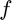

Find the minimum of a highly oscillating curve using funmin_g
Contents
Function definition
Define a highly oscillating function as follows:
close all; clearvars; format compact; format short; f = @(x) sin(10*pi*x.^4)-x;
Function minimization
We use funmin_g to approximate  over the interval , where and with default parameter values:
a = 0; b = 2; [fmin,outmin] = funmin_g(f, a, b);
Plots of the function and its minimum
We plot and the approximate minimum returned by funmin_g below. It is obvious that the approximation is not satisfactory. We compute the error by comparing to the true minimum returned by the Mathematica command, N[Minimize[{Sin[10 Pi x^4] - x, 0 <= x <= 2}, {x}],15]. The reason is probably that this function is not contained in the cone of functions sufficient for successful function minimization.
funmin_g_demo(fmin,outmin) truefmin=-2.99843616266006; truexmin=1.99843665971919; max_abs_error = max(abs(truefmin-fmin))
max_abs_error =
0.0728
A fix
We can widen the cone by increasing the number of initial points given to funmin_g.
inparam.a = a; inparam.b = b; inparam.ninit = 1000; inparam.nmax = inparam.ninit*10; [fmin2,outmin2] = funmin_g(f, inparam); funmin_g_demo(fmin2,outmin2) max_abs_error = max(abs(truefmin-fmin2))
max_abs_error = 9.3413e-09
References
[1] Sou-Cheng T. Choi, Yuhan Ding, Fred J.Hickernell, Xin Tong, "Local Adaption for Approximation and Minimization of Univariate Functions," Journal of Complexity 40, pp. 17-33, 2017.
[2] Sou-Cheng T. Choi, Yuhan Ding, Fred J. Hickernell, Lan Jiang, Lluis Antoni Jimenez Rugama, Da Li, Jagadeeswaran Rathinavel, Xin Tong, Kan Zhang, Yizhi Zhang, and Xuan Zhou, GAIL: Guaranteed Automatic Integration Library (Version 2.3.1) [MATLAB Software], 2020. Available from http://gailgithub.github.io/GAIL_Dev/